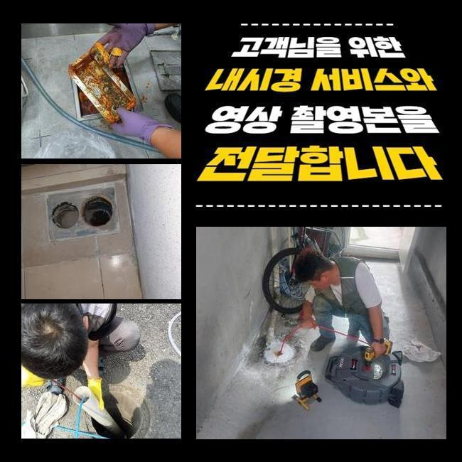
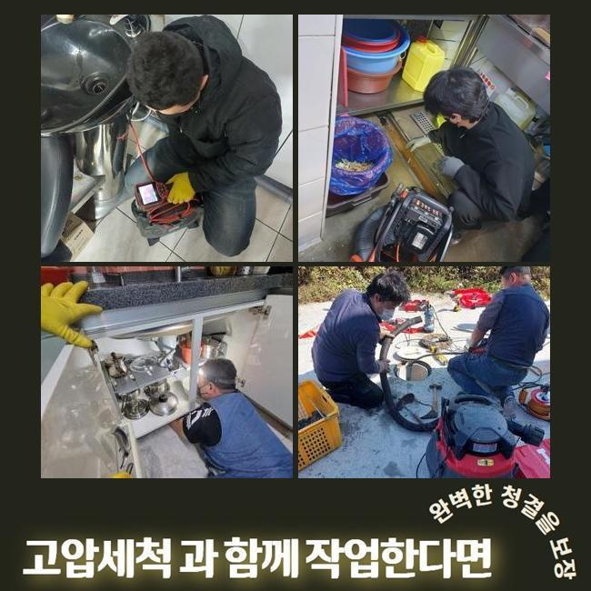
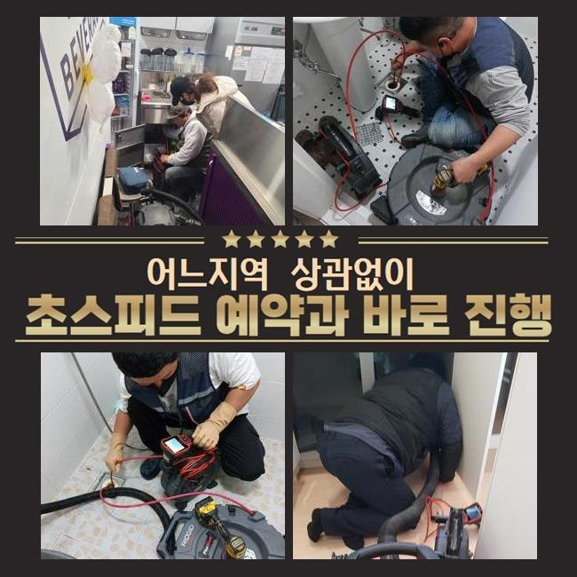
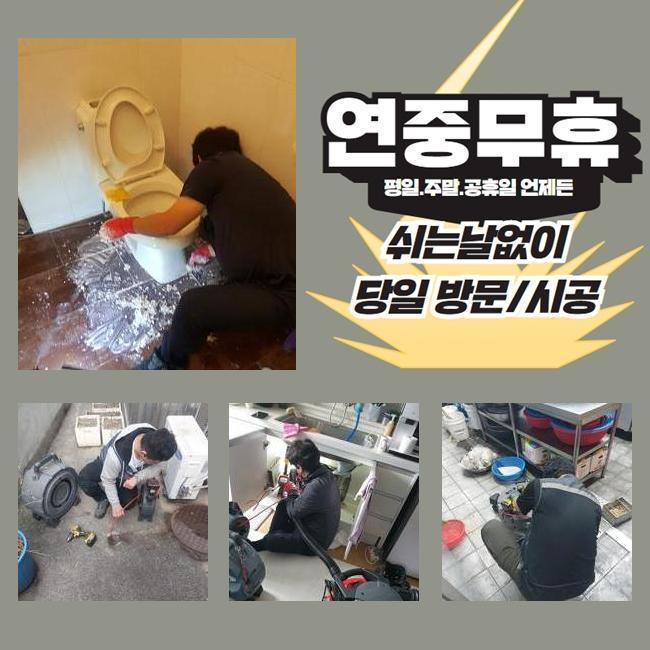
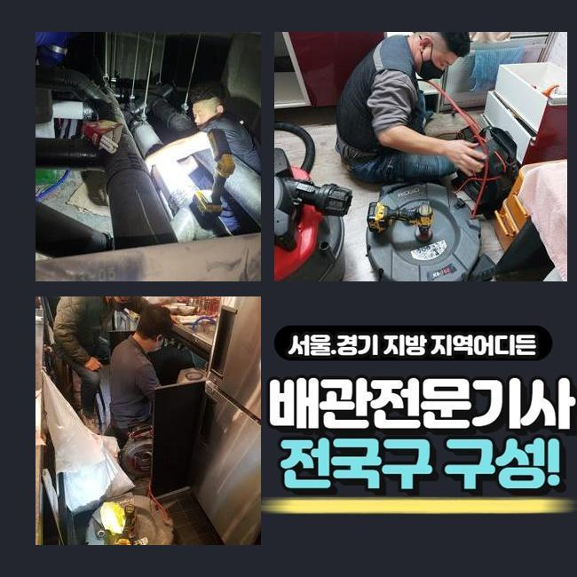
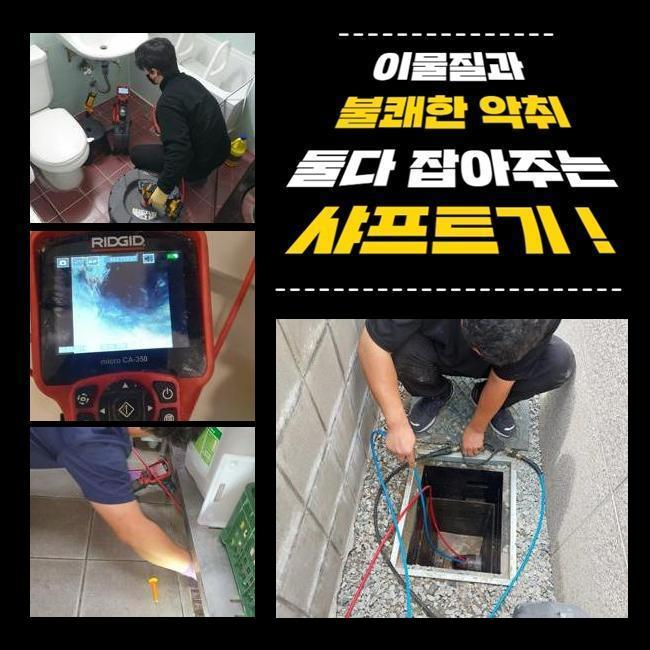

🏠 금천구 가산동변기역류 시흥동 하수구뚫어주는곳 배관막힘누수업체
시흥 변기막힘 전문 시공 후기

📋 작업 개요
- 위치: 시흥
- 서비스 유형: 변기막힘, 하수구막힘, 배관막힘, 맨홀막힘, 집수정막힘, 누수수리, 역류해결, 뚫는업체, 배관청소, 고압세척, 설비공사
- 작업 일시: 2024. 12. 17. 11:16
- 업체명: 하수구수사대 (010-5615-2118)
🔍 문제 상황
금천구 가산동변기역류 시흥동 하수구뚫어주는곳 배관막힘누수업체
최근의 현장은 우수 하수관 물길이 막혀서 꼭대기로 물이 넘쳐 흐르는 고장이 발생한 건물인데요
이 장소 말고도 여러 장소에서 문의를 주셨고 해결했었지만 금번 장소는 매일 많은 사용자들이 사용하는 공공기관인데다가 난이도가 높은 현장 상황이었기에 블로그에 글을 작성 하고 있습니다
대체로 빗물 하수관이 구식의 시설물에서 관리가 미흡하여 배수시설에 다양한 오염물들이 유입된 상태가 많은편입니다
그렇지만 이번 장애 현장은 건설된 지 오래된 상태가 아니며 관리 감독도 계획적으로 실시했던 건물입니다
4층 공간이 정원 공간으로 조성되어 있었고 옥상부분은 대부분 대리석 재질로 공사를 실시했습니다
그 때문에 석회물질들이 우수 배수관에 누적되어 배수가 안되면서 복합적인 불편사항이 생긴 장소였습니다
건물 관리자 스태프와 같이 우수 배관이 어디에서 어떻게 모인 다음 밖으로 나가는 방향 확인을 한 뒤에 시공을 수행하기로 하였습니다

🔎 원인 분석
💡 전문가 진단: 정밀 진단 장비를 사용하여 슬러지의 고착 여부를 판명하고 타격/세척 작업을 실시했습니다.
옥상공간의 빗물배출관 막힘 때문에 도서관 중앙으로 물이 새는 누수 상태까지 발생함에 따라 도서관을 내방하는 고객들의 불만이 커지기 때문에 짧은 시간 내에 수리 완료되길 원하셨어요
시설 담당 스태프들은 언제나 우천 시 옥상층에서 펌프 기계도 돌리면서 일시적으로 문제가 생기지 않게 고군부투하고 있었어요
근로자들의 노고를 줄이기 위해서 최선을 다하여 현상을 복구해드리도록 노력하였습니다
이번 문제장소는 3일에 걸쳐 절차를 수행했으며 빗물 배관은 10개 전부를 세척했습니다
첫날에도 비가 계속해서 오는 상황에서 과정을 처리했으며 배관전용 카메라 점검 및 고압클리닝을 이용해 공정을 수행했습니다
석회물질들이 쌓이면서 생기는 우수 배출관 막힘은 자주 발생하는데 이처럼 많은 양의 석회질 덩이는 처음 접했습니다
옥상층 전체가 대리석 성분이라 이 현장의 경우 규칙적인 점검으로 막힘 방지를 하는 것을 권장합니다
보편적인 우수 배출관과 다른 구조상 차이로 수리과정의 난도는 굉장히 높았고 고압 물세척과 플렉스샤프트 기구를 활용해 복잡한 작업을 진행하였습니다

🔧 작업 과정
옥상 층에서 절차를 수행 중 현황이 바뀌지 않아 시공 포인트를 이동하여 동시에 수리를 실시했습니다
수직 배관이 있는 지상층 배관실에서 상하 방향 동시에 절차를 수행했습니다
상부에서 뻗어나온 곳 그리고 연결되는 곳에서 석회물질 및 많은양의 찌꺼기들이 쌓이면서 시간이 아주 오래 소요되는 공정이었습니다
상부에서 뻗어나온 후 중간 구간에서 두번 정도 엘보 관으로 연결되어 있는 구간을지나 피트실 내부에 수직배관으로 내려오는 경로였는데 이쪽 배관이 지금 가득히 막힌 상태로 판단 되었으며
속도감있게 수리를 실시하려면 구멍을 뚫은 후 방호 조치 후 공정을 진행하게 되면 빨리 끝낼 수 있지만
배관 자리가 자료실 이용자들이 독서하는 곳의 천장에 위치해서 불만감을 발생시키지 않기 위해 시간이 소요되고 작업이 복잡해지더라도 도서관 시스템에는 불만을 안 주려고 열심히 작업했습니다
배관전용 카메라를 통하여 상부 빗물 우수 배출관이 뚫린 다음 이후 지점으로 옳겨진 석회성분들이 빽빽했습니다
이제부터는 석회 결정체들을 완벽하게 바깥으로 빼내야 시공이 흠 없이 완수됩니다
옥상층에서부터 바깥의 빗물 집수정까지 배관의 길이는 60미터 이상의 코스였기에 몇 번이나 위치를 조정하면서 고압수 세척 또한 2대의 장비를 이용해 동시에 수리를 진행하였습니다
건너편 옥상 빗물관 수리는 막힘 현상이 심각하지 않아 더 강력한 문제를 미리 막기 위한 배관 세척이었기에 플렉스샤프트 기구를 통해 석회를 벗겨내고 흡입장치를 사용해 청소를 진행하였습니다
옥상층 전체 우수관 작업 절차가 7할정도 완료된 후 우수맨홀에서 역방향으로 석회질 덩이들을 제거하는 과정을 실시합니다
맨홀 지점으로 장소를 이동하여 고압수 세척을 이용해 석회 고형물들을 배출하는 시공으로 마무리 지을 계획이었어요
이번 현장은 공사 수행 기간이 사흘에 걸쳐 지속될 정도로 대형 작업장에다가 최고 난이도의 작업장이었어요


✅ 작업 완료
시설 담당 근무자들의 지원과 기상조건이 변화되지 않았다면 성공을 확신드리기 어려웠던 곳이었는데요
천만다행으로 조금씩 우천 상태가 나아진데다가 직접 나서서 도와준 근무자들 덕에 상태는 신속하게 해결 할 수 있었죠
많은 빗물이 내리면 언제나 발생해 의뢰가 들어오는 빗물 배관 막힘 상황은 예방 조치를 하여 막힘상황이 없도록 규칙적인 체크와 관리를 가졌으면 좋겠습니다
폭우가 내리기 전에 더 큰 손실을 피할 수 있도록 전문업체에 필히 상담하셔서 검사를 의뢰하세요



⚠️ 베란다 누수 및 방수 관리 방법
- ✅ 비가 많이 올 때 창틀 주변이나 아래층 천장에 얼룩이 생기는지 정기적으로 확인해 보세요.
- ✅ 우수관 주변 실리콘 마감이 들뜨거나 깨진 틈새가 있는지 손상 여부를 수시로 체크하세요.
- ✅ 베란다 바닥 타일의 줄눈(메지)이 소실되면 그 틈으로 물이 침투하여 누수가 유발됩니다.
- ✅ 누수 의심 증상 발견 시 방치하면 아래층 손실이 커지므로 즉시 전문가의 진단을 받으십시오.
💡 핵심 정리
- 확실한 장비 작업(내시경 점검 및 샤프트 스케일링)으로 원인을 뿌리 뽑습니다.
- 작업 후 1년 이내에 동일한 부위 재발 시 100% 무상 A/S 서비스를 보장합니다.
- 서울 · 경기 · 인천 전 지역에 24시간 언제든 긴급 출동할 수 있도록 항시 대기 중입니다.
❓ 자주 묻는 질문 (FAQ)
🚨 시흥 변기막힘 문제로 고민이신가요?
정확한 원인 진단과 확실한 시공으로 재발 없는 해결을 약속드립니다.
24시간 긴급 출동 | 서울 · 경기 · 인천 전지역 | 1년 내 재발 시 무상 A/S